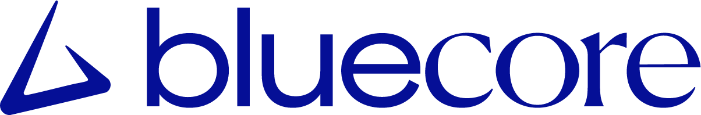
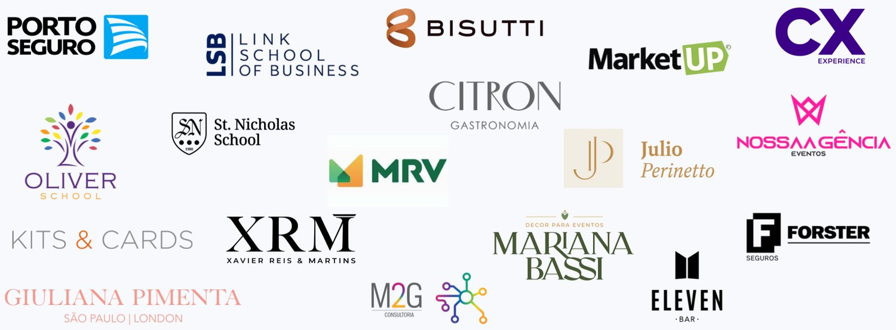

A Blue Core transforma saúde em engajamento, bem-estar e resultado. São experiências e programas baseados em ciência, na Medicina do Estilo de Vida e nos princípios das Blue Zones, que também apoiam a sua empresa na conformidade com a NR-01.
Cuidar de saúde não é custo. É o melhor investimento do seu negócio: a cada US$ 1 investido em saúde mental, é possível obter até US$ 4 de retorno. Fonte: The Lancet Psychiatry / OMS, para programas de ansiedade e depressão.
Saúde deixou de ser tema de RH e virou risco para o negócio.
A norma passou a exigir que a empresa identifique e gerencie riscos à saúde mental, e muitas ainda não sabem por onde começar.
Em 2025, o Brasil registrou 546 mil afastamentos ligados ao trabalho. Cada um pesa na produtividade, no clima e no custo.
Ações isoladas e genéricas têm baixa adesão e não mudam hábitos. Sem continuidade e conexão com a rotina, o investimento não se converte em resultado.
De 45 a 90 minutos sobre stress inteligente, burnout, neuroperformance, aromaterapia para performance e equilíbrio emocional, Blue Zones, liderança e felicidade no trabalho*, com ferramentas práticas que o time aplica na hora e continua usando depois.
*Outros temas sob demanda. Consulte.Análise individual pela plataforma Life Up, com devolutiva da diretora médica. Cada pessoa entende como estão seus hábitos de sono, alimentação, movimento, estresse e conexões, e sai com as prioridades claras para cuidar da saúde.
Eventos totalmente curados, com ambientação, cardápio, atividades e conteúdos pensados para gerar bem-estar. Ideais para datas especiais, convenções, encontros de fim de ano, lançamentos e experiências de relacionamento com clientes e parceiros.
Imersões de 1 a 3 dias em ambientes saudáveis, para fortalecer conexões e saúde. Longe da rotina, as pessoas vivem na prática os pilares do estilo de vida saudável e voltam com novos hábitos e um novo mindset.
Jornada para líderes que integra a presença que eles projetam e a saúde que a sustenta: comunicação e influência, protocolo médico de sono, estresse e energia, e organização da agenda. Começa com um diagnóstico integrado e pode ser individual ou em grupo.
Trilhas de aprendizagem estruturadas em 3 a 6 encontros, que combinam treinamentos, workshops e rodas de conversa, alinhados ao contexto, aos desafios e às necessidades da organização. A cada encontro, o tema ganha profundidade e as práticas se consolidam em novos hábitos.
Programa estruturado para a gestão de riscos psicossociais exigida pela NR-01. Atuamos nas três etapas: diagnóstico, programas contínuos e melhoria contínua.
Trilha completa de 6 a 12 meses, desenhada sob medida para a empresa e o time. Integra diagnóstico, letramentos, workshops, eventos e palestras, com desafios entre os encontros para que as mudanças se consolidem ao longo do programa.
Médica especialista em Medicina do Estilo de Vida e Saúde Mental Funcional Integrativa.
Biólogo, PhD em bioquímica, com 20 anos em pesquisa, desenvolvimento e inovação.
18 anos no mercado corporativo em Marketing e Customer Experience, 10 deles como líder e executiva. Aromaterapeuta e especialista em organização pessoal.

A Attrium faz o diagnóstico da sua necessidade, desenha a solução com a Blue Core e acompanha a implementação do começo ao fim.